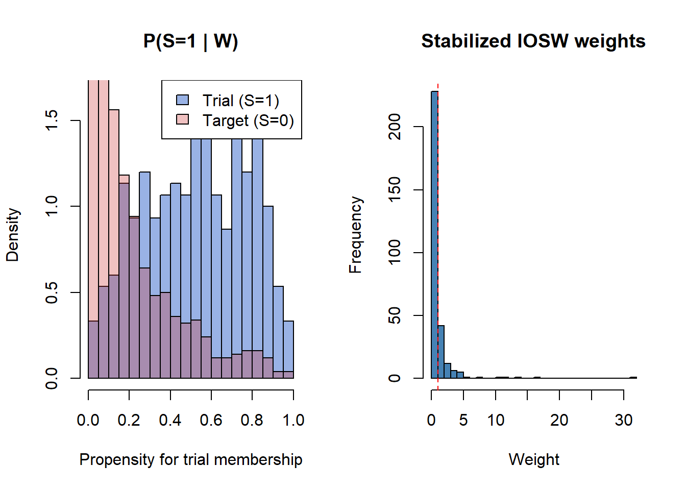
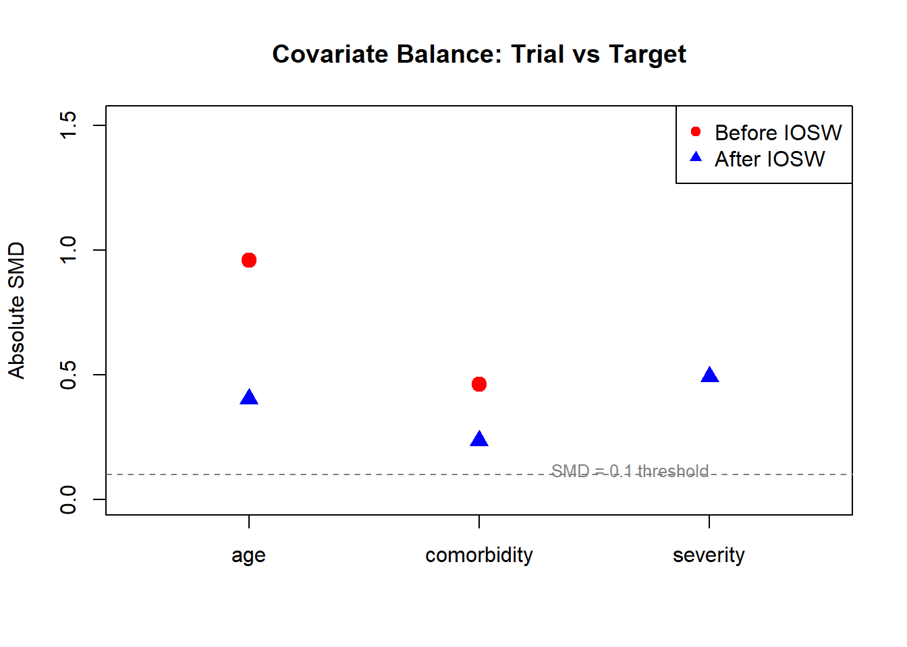
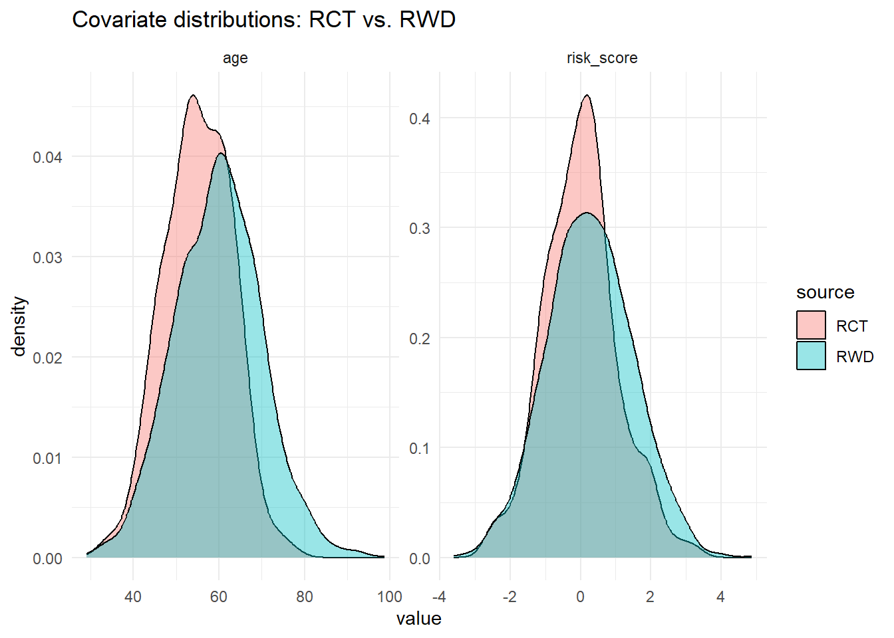
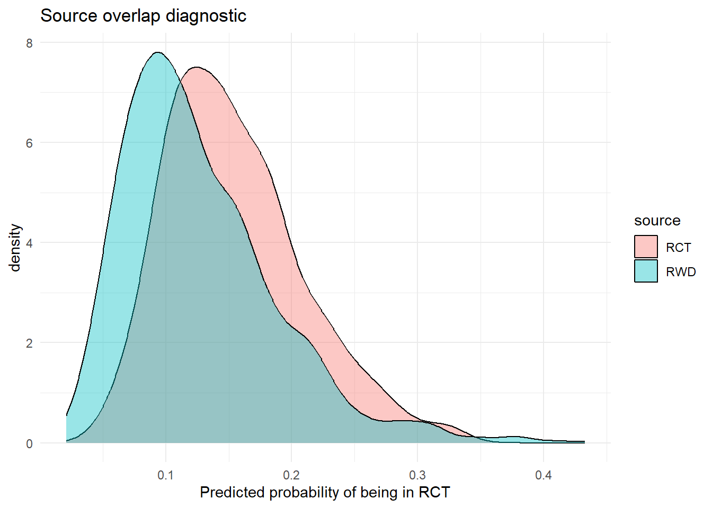

# Pseudocode for transportability TMLE
# Step 1: Combine trial and target population data
combined <- rbind(trial_data, target_data)
combined$S <- c(rep(1, nrow(trial_data)), rep(0, nrow(target_data)))
# Step 2: Estimate P(S=1 | W) - study membership propensity
ps_model <- SuperLearner(Y = combined$S,
X = combined[, covariates],
SL.library = c("SL.glm", "SL.ranger"))
combined$ps_study <- ps_model$SL.predict
# Step 3: Estimate E(Y | A, W) in trial only
outcome_model <- SuperLearner(Y = trial_data$Y,
X = trial_data[, c("A", covariates)],
SL.library = c("SL.glm", "SL.ranger"))
# Step 4: Predict counterfactuals for target population
target_data$Qbar1 <- predict(outcome_model,
newdata = transform(target_data, A = 1))$pred
target_data$Qbar0 <- predict(outcome_model,
newdata = transform(target_data, A = 0))$pred
# Step 5: PATE estimate (before targeting step)
PATE_initial <- mean(target_data$Qbar1 - target_data$Qbar0)
# Step 6: Apply TMLE targeting/fluctuation for efficiency and double robustness
# (Full implementation requires the efficient influence function for the PATE)27 When RWD Meets RCT: Hybrid Designs, Transportability, and Data Fusion
Combining randomized and observational evidence to improve precision and generalizability
Estimated reading time: ~75 minutes
In development
This chapter is under active development. Content may be incomplete, change substantially, or contain placeholder material.
Learning Objectives
After completing this chapter, you will be able to:
- Identify the three core reasons to combine RCT and real-world data: precision, generalizability, and feasibility
- Describe the main hybrid design strategies: external control arms, augmented control arms, and transportability/generalizability
- State the identification assumptions required for hybrid designs, including mean exchangeability across studies, and explain which assumption makes data fusion dangerous
- Distinguish between the sample average treatment effect (SATE), population average treatment effect (PATE), and site-specific effects
- Explain why naive generalization of trial results to external populations fails under effect modification and covariate shift
- State and assess the assumptions required for transportability: S-exchangeability, S-positivity, and consistency
- Implement IOSW and doubly robust transportability estimators, and diagnose covariate shift
- Explain why naive pooling of RCT and observational data is dangerous and characterize the bias it introduces formally
- Apply ES-CV-TMLE and A-TMLE for data-adaptive, bias-protected data fusion
- Compare ES-CV-TMLE and A-TMLE in terms of when each is preferred, and interpret their output
27.1 Why Combine RCT and RWD?
No single data source is perfect. RCTs buy us internal validity, but they are often too small, too narrow, or too slow. RWD brings scale and diversity but lacks randomization. Hybrid designs try to get the best of both, and a growing literature formalizes how to combine randomized and observational evidence (Colnet et al. 2024). Three reasons drive the effort to combine them.
27.1.1 Precision
Trials may be underpowered for:
- Rare safety endpoints
- Important subgroups
- Long-term secondary endpoints
External RWD can add information and boost precision without enrolling more randomized patients.
27.1.2 Generalizability
RCT participants tend to:
- Be younger and healthier
- Have fewer comorbidities
- Be more adherent and monitored
Trial results may therefore not apply cleanly to routine-care populations. Consider the typical phase III oncology trial. Its enrolled patients are often younger and have better performance status than the patients you would meet in a community oncology clinic.
27.1.3 Feasibility and Ethics
Hybrid designs are useful when:
- Placebo or standard randomized controls are unethical
- Only a single-arm trial is feasible
- Rapid evidence is needed (e.g., post-marketing surveillance, rare diseases)
27.2 Three Design Strategies
27.2.1 External Control Arms
An external control arm works like this: instead of randomizing some patients to a control group inside your trial, you borrow the control group from outside it, typically from a registry, an EHR database, or historical trial data. A single-arm trial, in which all patients get the experimental treatment, is then compared against an external control arm drawn from RWD. This shows up in oncology (historical controls), in rare diseases, and in settings where the standard of care is well characterized.
Challenges of External Controls
External controls carry serious methodological risks that every epidemiologist should scrutinize:
- Confounding by indication: Patients in the RWD were not randomized. The reasons they received a treatment, or did not, are entangled with their prognosis.
- Differences in data capture: The trial measures outcomes with protocol-specified visits, imaging schedules, and adjudication committees. The RWD may lean on billing codes, free-text notes, or inconsistent follow-up.
- Eligibility misalignment: Trial patients passed strict inclusion and exclusion criteria. RWD patients may differ systematically.
- Calendar time and secular trends: Shifts in supportive care, diagnostic coding (for example, the ICD-9 to ICD-10 transition), or standard of care over time can create spurious differences.
A sponsor might augment a small single-arm trial with registry data from patients on standard of care. If the registry patients are systematically healthier, the comparison is biased.
Always ask: would the external controls have been eligible for the trial, and are their outcomes measured comparably?
27.2.2 Augmented Control Arms
Unlike a fully external control, an augmented control arm keeps randomization inside the trial. You still have a concurrent randomized control group, and the external RWD supplements it rather than replacing it. Think of it as topping up your control arm with extra data.
An RCT randomizes patients to experimental treatment vs trial control (e.g., 2:1 randomization), but the trial control arm is augmented with external RWD controls to improve precision, reduce the required randomized control sample size, and support safety and rare-event evaluation.
Borrowing can be:
- Fixed (pre-specified): You decide before unblinding how much external data to incorporate.
- Dynamic / adaptive (data-driven): The degree of borrowing depends on how similar the RWD control outcomes are to the trial control outcomes (power prior and commensurate prior approaches, for instance).
This is generally safer than a pure external control design, because the concurrent randomized control arm is a built-in validity check. The target remains the treatment effect in the trial-eligible population, now estimated with better precision by borrowing from the external data.
27.2.3 Transportability and Generalizability
A third strategy, transporting or generalizing trial results to a broader population, is discussed in detail in the next section (Section 27.4). To transport a trial result is to take the causal effect estimated in the trial’s selected population and ask what that effect would be in a different, broader population. The techniques include inverse odds of sampling weights (IOSW), transport and generalizability TMLE (Rudolph and Laan 2017), and doubly robust methods that combine outcome and sampling models (Hernán and Robins 2025; Dahabreh et al. 2020).
27.3 Identification Assumptions in Hybrid Settings
Hybrid designs require the standard causal identification assumptions (consistency, exchangeability, positivity; see Chapter 5 for a full treatment) plus additional requirements specific to combining data sources.
Assumption: No Unmeasured Confounding (for External / Observational Arms)
The exchangeability assumption (Chapter 5) applies specifically to the RWD component. The RCT component is protected by randomization; the RWD component is not. Residual confounding in the external data may bias the hybrid estimate.
Assumption: Common Support (Overlap)
The positivity assumption (Chapter 5) extends across data sources: the covariate distributions of RCT and RWD patients must overlap. If trial participants are systematically different from RWD patients in ways that matter for the outcome, you cannot borrow information reliably. Check covariate distributions carefully before proceeding.
Assumption: Consistency Across Sources
Beyond the standard consistency assumption, hybrid designs require that outcome definitions, medical coding, and measurement schemes are compatible across sources. For example, “progression-free survival” measured by central radiology review in a trial is not the same as “progression-free survival” inferred from claims data or chart review. If definitions differ, the hybrid estimator conflates incompatible quantities.
For data fusion specifically, in the sense of combining causal knowledge across heterogeneous data sources (Bareinboim and Pearl 2016), the formal requirements are:
Mean exchangeability in the trial: \(E(Y_a \mid S = 1, W, A = a) = E(Y_a \mid S = 1, W)\). This holds by randomization.
Positivity of trial enrollment: \(P(S = 1 \mid W) > 0\) for all covariate strata. The RCT must include patients from every subpopulation represented in the RWD. This is the overlap condition between studies.
Positivity of treatment in the trial: \(0 < P(A = 1 \mid S = 1, W) < 1\). This holds by randomization design.
Mean exchangeability across studies (the critical assumption): \(E(Y_a \mid S = 1, W) = E(Y_a \mid W)\). The conditional mean outcome under each treatment is the same in the trial and the target population. This fails when unmeasured confounders in the RWD affect outcomes differently than in the trial. Suppose trial patients receive more intensive monitoring that independently reduces the risk of major adverse cardiovascular events (MACE). Then the outcome model differs between the trial and real-world settings even after conditioning on measured covariates.
Assumption 4 is the one that makes data fusion dangerous. ES-CV-TMLE and A-TMLE (discussed in Section 27.6 and Section 27.7) are built to be robust when it fails. They either detect the violation and fall back to the RCT-only estimate, or they estimate and correct the resulting bias.
27.4 Transportability and Generalizability
27.4.1 Clarifying the Targets: SATE vs PATE vs Site-Specific Effects
When a randomized trial produces an effect estimate, it is natural to ask whether the result applies to my patients. The answer depends on which causal estimand we are targeting.
Sample Average Treatment Effect (SATE): The average treatment effect among individuals enrolled in the trial: \[\text{SATE} = E[Y^{a=1} - Y^{a=0} \mid S = 1]\] where \(S = 1\) indicates trial membership. This is what the trial directly estimates through randomization.
Population Average Treatment Effect (PATE): The average treatment effect in a target population that may differ from the trial sample: \[\text{PATE} = E[Y^{a=1} - Y^{a=0}]\] This is usually what clinicians and policymakers want: the expected effect if the treatment were deployed broadly.
Site-specific or subgroup effects: Treatment effects within particular subpopulations (e.g., a specific hospital, age group, or region). These are relevant when treatment effects are heterogeneous and local decision-making is needed.
The gap between SATE and PATE can be large. Trials often enroll patients who are younger, healthier, and more adherent than the broader population. If the treatment effect varies with these characteristics (effect modification), the SATE may be a poor guide for population-level decisions.
27.4.2 Why Naive Generalization Fails
Three mechanisms drive SATE and PATE apart:
27.4.2.1 Selection Into Trials
Trial participants are not a random sample of the target population. Enrollment criteria, willingness to participate, and geographic access all create selection. When the factors driving selection also modify the treatment effect, the trial estimate does not transport.
27.4.2.2 Effect Modification Across Populations
When the treatment effect varies with baseline covariates \(W\) (e.g., age, comorbidity burden, disease severity), and the distribution of \(W\) differs between trial and target populations, the average effect will differ even if the conditional effects \(E[Y^{a=1} - Y^{a=0} \mid W = w]\) are identical.
27.4.2.3 Covariate Shift
Even when the conditional treatment effect (given covariates) is the same across populations, differences in the marginal distribution of covariates produce different marginal effects. This is a reweighting problem, and it is the one transportability methods solve.
The Transportability Assumption
The key assumption underlying every transportability method is that, conditional on measured covariates, the treatment effect is the same across populations. This is untestable, but it becomes more plausible as richer covariate sets become available. It is closely related to the “no unmeasured effect modification” assumption.
27.4.3 Assumptions for Transportability
Formally, transporting a causal effect from a trial (\(S = 1\)) to a target population requires three assumptions:
27.4.3.1 S-Exchangeability (Conditional Independence)
\[Y^a \perp\!\!\!\perp S \mid W \quad \text{for } a \in \{0, 1\}\]
Conditional on measured covariates \(W\), the potential outcomes are independent of study membership: trial participants and target population members with the same covariate profile have the same expected outcomes under each treatment.
This is the transportability assumption. It breaks when unmeasured factors that differ between populations also modify the treatment effect.
27.4.3.2 S-Positivity
\[P(S = 1 \mid W = w) > 0 \quad \text{for all } w \text{ with } P(W = w) > 0\]
Every covariate profile present in the target population must have some representation in the trial. If the target population includes patient types that were entirely excluded from the trial, transportability is impossible for those patients.
27.4.3.3 Consistency
\[Y = Y^a \text{ when } A = a\]
The standard consistency assumption: the observed outcome under treatment \(a\) equals the potential outcome under \(a\). This requires that the treatment is implemented the same way in the trial and the target population (same drug, dose, protocol).
27.4.4 Methods for Transportability
27.4.4.1 IOSW: Inverse Odds of Sampling Weights
The simplest approach reweights the trial data to match the covariate distribution of the target population. The inverse odds of sampling weight for individual \(i\) in the trial is:
\[w_i = \frac{P(S = 0 \mid W_i)}{P(S = 1 \mid W_i)} = \frac{1 - P(S = 1 \mid W_i)}{P(S = 1 \mid W_i)}\]
where \(P(S = 1 \mid W)\) is the propensity for study membership, estimated from a combined dataset of trial participants and target population members.
The PATE is then estimated as:
\[\widehat{\text{PATE}} = \frac{\sum_{i: S_i=1, A_i=1} w_i Y_i}{\sum_{i: S_i=1, A_i=1} w_i} - \frac{\sum_{i: S_i=1, A_i=0} w_i Y_i}{\sum_{i: S_i=1, A_i=0} w_i}\]
IOSW Limitations
IOSW depends entirely on correct specification of the study membership model. If that model is wrong, the transported estimate is biased. Extreme weights, which arise when the trial population is very different from the target, inflate variance and can produce unstable estimates.
27.4.4.2 Outcome Modeling with Transport
An alternative is to fit an outcome model in the trial data (where randomization ensures unconfounded estimation) and then standardize (g-compute) over the covariate distribution of the target population:
\[\widehat{\text{PATE}} = \frac{1}{n_{\text{target}}} \sum_{i: S_i=0} \left[\hat{E}(Y \mid A=1, W_i) - \hat{E}(Y \mid A=0, W_i)\right]\]
This approach is consistent when the outcome model is correctly specified, and it does not require a correct model of study membership.
27.4.4.3 Doubly Robust Approaches: TMLE for Transportability
A TMLE for transportability combines the IOSW and outcome modeling approaches. It stays consistent if either the study membership model or the outcome model is correctly specified (see Chapter 10 for the general TMLE framework).
The procedure:
- Estimate the study membership model: \(\hat{P}(S = 1 \mid W)\) using logistic regression or Super Learner
- Estimate the outcome model: \(\hat{E}(Y \mid A, W, S = 1)\) using data from the trial
- Target the PATE: Apply the TMLE fluctuation step using the efficient influence function for the PATE, which incorporates both the outcome model predictions and the IOSW weights
- Compute the transported estimate: Average the targeted predictions over the target population
27.4.5 Diagnostics for Covariate Shift
Before transporting trial results, assess how different the trial and target populations really are.
27.4.5.1 Propensity for Study Membership
Fit a model for \(P(S = 1 \mid W)\) and examine the distribution (Figure 27.1):
set.seed(2026)
# Simulate trial and target populations
n_trial <- 300
n_target <- 1000
# Trial enrolls younger, healthier patients
trial_age <- rnorm(n_trial, mean = 55, sd = 8)
trial_comorbidity <- rbinom(n_trial, 1, 0.15)
trial_severity <- rnorm(n_trial, mean = 2, sd = 0.8)
# Target population is older, sicker
target_age <- rnorm(n_target, mean = 65, sd = 12)
target_comorbidity <- rbinom(n_target, 1, 0.40)
target_severity <- rnorm(n_target, mean = 3.5, sd = 1.2)
# Combine
combined <- data.frame(
age = c(trial_age, target_age),
comorbidity = c(trial_comorbidity, target_comorbidity),
severity = c(trial_severity, target_severity),
S = c(rep(1, n_trial), rep(0, n_target))
)
# Fit study membership model
ps_model <- glm(S ~ age + comorbidity + severity,
data = combined, family = binomial)
combined$ps <- predict(ps_model, type = "response")
# Plot
par(mfrow = c(1, 2))
# Propensity score distribution
hist(combined$ps[combined$S == 1], breaks = 30, col = rgb(0.2, 0.4, 0.8, 0.5),
main = "P(S=1 | W)", xlab = "Propensity for trial membership",
xlim = c(0, 1), freq = FALSE)
hist(combined$ps[combined$S == 0], breaks = 30, col = rgb(0.8, 0.2, 0.2, 0.3),
add = TRUE, freq = FALSE)
legend("topright", c("Trial (S=1)", "Target (S=0)"),
fill = c(rgb(0.2, 0.4, 0.8, 0.5), rgb(0.8, 0.2, 0.2, 0.3)))
# IOSW weights
trial_idx <- combined$S == 1
iosw <- (1 - combined$ps[trial_idx]) / combined$ps[trial_idx]
iosw_stabilized <- iosw / mean(iosw)
hist(iosw_stabilized, breaks = 30, col = "steelblue",
main = "Stabilized IOSW weights", xlab = "Weight")
abline(v = 1, lty = 2, col = "red")
par(mfrow = c(1, 1))
cat(sprintf("Effective sample size: %.0f / %d (%.0f%%)\n",
sum(iosw_stabilized)^2 / sum(iosw_stabilized^2),
n_trial,
100 * (sum(iosw_stabilized)^2 / sum(iosw_stabilized^2)) / n_trial))Effective sample size: 41 / 300 (14%)
27.4.5.2 Standardized Mean Differences
Compare covariate distributions before and after reweighting (Figure 27.2):
# Compute standardized mean differences
compute_smd <- function(x_trial, x_target, weights = NULL) {
if (is.null(weights)) {
mean_diff <- mean(x_trial) - mean(x_target)
} else {
mean_diff <- weighted.mean(x_trial, weights) - mean(x_target)
}
pooled_sd <- sqrt((var(x_trial) + var(x_target)) / 2)
return(mean_diff / pooled_sd)
}
covars <- c("age", "comorbidity", "severity")
smd_before <- sapply(covars, function(v)
compute_smd(combined[[v]][trial_idx], combined[[v]][!trial_idx]))
smd_after <- sapply(covars, function(v)
compute_smd(combined[[v]][trial_idx], combined[[v]][!trial_idx],
weights = iosw_stabilized))
smd_df <- data.frame(
covariate = rep(covars, 2),
smd = c(smd_before, smd_after),
status = rep(c("Before IOSW", "After IOSW"), each = length(covars))
)
# Dot plot
plot(1:length(covars), abs(smd_before), pch = 19, col = "red", cex = 1.5,
xlim = c(0.5, length(covars) + 0.5), ylim = c(0, max(abs(smd_before)) * 1.1),
xlab = "", ylab = "Absolute SMD", main = "Covariate Balance: Trial vs Target",
xaxt = "n")
points(1:length(covars), abs(smd_after), pch = 17, col = "blue", cex = 1.5)
axis(1, at = 1:length(covars), labels = covars)
abline(h = 0.1, lty = 2, col = "gray50")
text(length(covars), 0.12, "SMD = 0.1 threshold", col = "gray50", cex = 0.8, adj = 1)
legend("topright", c("Before IOSW", "After IOSW"),
pch = c(19, 17), col = c("red", "blue"))
27.4.6 Worked Example: SATE vs PATE Divergence
This example shows how effect modification pulls the trial-specific effect away from the population effect.
set.seed(2026)
# --- Data generation with effect modification ---
n_trial <- 300
n_target <- 1000
# Trial population (younger)
W_trial <- rnorm(n_trial, mean = 55, sd = 8)
A_trial <- rbinom(n_trial, 1, 0.5) # randomized
# Target population (older)
W_target <- rnorm(n_target, mean = 65, sd = 12)
# Treatment effect INCREASES with age (effect modification)
# Y = 10 + 0.1*age + A * (0.5 + 0.05 * (age - 50)) + noise
# At age 55: effect = 0.5 + 0.05*5 = 0.75
# At age 65: effect = 0.5 + 0.05*15 = 1.25
tau <- function(age) 0.5 + 0.05 * (age - 50)
Y_trial <- 10 + 0.1 * W_trial + A_trial * tau(W_trial) + rnorm(n_trial, 0, 1)
# SATE: treatment effect estimated in trial
sate_est <- mean(Y_trial[A_trial == 1]) - mean(Y_trial[A_trial == 0])
# True SATE (analytical)
true_sate <- mean(tau(W_trial))
# True PATE (analytical)
true_pate <- mean(tau(W_target))
# IOSW-transported estimate
combined_w <- c(W_trial, W_target)
combined_s <- c(rep(1, n_trial), rep(0, n_target))
ps_fit <- glm(combined_s ~ combined_w, family = binomial)
ps_hat <- predict(ps_fit, type = "response")
ps_trial <- ps_hat[1:n_trial]
iosw <- (1 - ps_trial) / ps_trial
iosw_stab <- iosw / mean(iosw)
pate_iosw <- weighted.mean(Y_trial[A_trial == 1], iosw_stab[A_trial == 1]) -
weighted.mean(Y_trial[A_trial == 0], iosw_stab[A_trial == 0])
cat("=== SATE vs PATE with Effect Modification ===\n")=== SATE vs PATE with Effect Modification ===cat(sprintf("True SATE (trial population): %.3f\n", true_sate))True SATE (trial population): 0.767cat(sprintf("Estimated SATE (naive): %.3f\n", sate_est))Estimated SATE (naive): 0.983cat(sprintf("True PATE (target population): %.3f\n", true_pate))True PATE (target population): 1.245cat(sprintf("Estimated PATE (IOSW): %.3f\n", pate_iosw))Estimated PATE (IOSW): 1.097cat(sprintf("\nDivergence (PATE - SATE): %.3f\n", true_pate - true_sate))
Divergence (PATE - SATE): 0.478cat("\nThe target population is older, and the treatment effect\n")
The target population is older, and the treatment effectcat("increases with age, so PATE > SATE.\n")increases with age, so PATE > SATE.Here the treatment effect increases with age. Because the target population is older than the trial population, the PATE exceeds the SATE. A clinician treating the target population who relied on the trial’s SATE would underestimate the benefit. The IOSW-transported estimate corrects for this by upweighting the older trial participants.
27.4.7 Connection to ES-CV-TMLE and A-TMLE
The adaptive methods described in Section 27.6 and Section 27.7 address a related but distinct problem. Rather than reweighting a trial to a new target population, they borrow external data to sharpen estimation of the effect in the trial-eligible population:
- ES-CV-TMLE (Lauren Eyler Dang et al. 2022) uses cross-validation to decide how much external data to borrow when estimating the trial-population ATE, downweighting external data that introduces bias.
- A-TMLE (Laan et al. 2025) adapts to how similar the trial and external populations are. It gains efficiency when they resemble each other and guards against bias when they do not.
Both are best read as adaptive data-fusion (borrowing) estimators for the trial-population ATE, not transportability estimators: they do not target the PATE in a new population. Transportability, the reweighting of a trial result to a different target population, remains a separate goal, addressed by the IOSW and doubly robust methods above.
27.5 The Danger of Naive Pooling
27.5.1 A Motivating Scenario
Suppose you have a small RCT of 400 patients comparing a new diabetes drug to standard of care, with MACE as the primary endpoint. The RCT alone yields a risk difference of \(-0.7\%\) with a wide 95% CI of \([-2.0\%, 0.5\%]\), not statistically significant.
You also have access to a large claims database (Optum, say) with 14,000 patients on the same two treatments. Naive pooling, which simply combines the datasets and runs TMLE on the merged data, might yield a tighter CI. But the claims data carry unmeasured confounders. Patients who received the new drug may have been healthier, more adherent, or under closer monitoring. If those unmeasured factors differ between treatment groups, the observational treatment effect is biased.
The naive pooled estimate might come out at \(-2.5\%\) with a tight CI of \([-3.5\%, -1.5\%]\), statistically significant but wrong. The narrow CI lends false confidence to a biased estimate.
27.5.2 Formalizing the Bias
Let \(S\) denote the study indicator (\(S = 1\) for RCT, \(S = 0\) for RWD), \(A\) the treatment, \(Y\) the outcome, and \(W\) baseline covariates. The pooled-ATE estimand is:
\[ \tilde{\Psi}(P_0) = E\big[E(Y \mid W, A = 1) - E(Y \mid W, A = 0)\big] \]
This pools the outcome regression across both studies. When the conditional mean outcome differs between studies (\(E(Y_a \mid S = 1, W) \neq E(Y_a \mid W)\)), the pooled-ATE is biased for the true treatment effect.
The RCT-ATE estimand uses only the trial’s outcome model but marginalizes over the broader covariate distribution:
\[ \Psi(P_0) = E_W\big[E(Y \mid S = 1, W, A = 1) - E(Y \mid S = 1, W, A = 0)\big] \]
The bias is the difference:
\[ \Psi^{\#}(P_0) = \tilde{\Psi}(P_0) - \Psi(P_0) \]
Both ES-CV-TMLE and A-TMLE target the RCT-ATE \(\Psi(P_0)\). ES-CV-TMLE detects when \(\Psi^{\#}\) is large enough to reject the external data; A-TMLE directly estimates and subtracts \(\Psi^{\#}\).
27.5.3 Bias-Variance Tradeoff
The insight behind both methods is that combining RCT and RWD involves a tradeoff:
- Variance reduction: More data reduces the variance of the treatment effect estimate. The RWD contributes information about the outcome regression \(E(Y \mid W, A)\), which sharpens outcome prediction.
- Bias introduction: If the RWD outcome model differs from the RCT’s, pooling introduces bias proportional to \(\Psi^{\#}\).
The right strategy depends on whether the bias is small enough relative to the variance reduction. If \(|\Psi^{\#}|^2 < \text{variance reduction from pooling}\), pooling helps; otherwise it hurts. ES-CV-TMLE and A-TMLE handle this tradeoff differently, as summarized in Section 27.8.
27.6 ES-CV-TMLE: Experiment-Selector Cross-Validated TMLE
27.6.1 The Core Insight
External data help you train better prediction models, but the RCT is the judge. It is like studying for an exam with extra textbooks (the RWD) while the exam itself (cross-validation) is graded only on RCT data. If the external textbooks helped you learn real patterns, your exam score improves. If they taught you spurious associations driven by confounding, the exam catches it and those models get down-weighted.
ES-CV-TMLE (Lauren Eyler Dang et al. 2022) uses V-fold cross-validation to decide whether pooling helps or hurts. The RCT alone may give poor precision for the nuisance functions \(Q\) and \(g\). External data can improve the learning of these functions, but confounding in the RWD could distort outcome relationships and treatment assignment mechanisms. ES-CV-TMLE protects against this by:
- Proposing multiple candidate nuisance models, some learned on RCT only, some on RWD only, some on combined data.
- Using cross-validation on the RCT to evaluate each model’s performance (e.g., via log-likelihood loss).
- Choosing the best-performing nuisance model (or an ensemble of them) for TMLE.
External data act as supervisors, not deciders. Even when the RWD is confounded, the procedure is asymptotically no worse than using the RCT alone.
27.6.2 Algorithm Step by Step
- Split the combined (RCT + RWD) dataset into V cross-validation folds.
- In each training fold, fit outcome regressions, treatment mechanisms, and study enrollment models. Compute the ATE under two “experiments”: (a) RCT data only, (b) RCT + RWD pooled.
- Evaluate a selection criterion for each experiment: estimated bias\(^2\) + variance. The bias is estimated from the discrepancy between the RCT-only and pooled outcome models. Optionally, a negative control outcome (NCO) can sharpen the bias estimate.
- Select the experiment that minimizes the criterion in each fold.
- In the validation fold, estimate the ATE using TMLE for the selected experiment.
- Average across validation folds to produce the final estimate and confidence interval.
The cross-validation is critical, because it prevents the selection from overfitting to the training data. The proportion of folds that select pooling is a useful diagnostic. When most folds select RCT-only, the external data are likely biased.
27.6.3 Application: WASH Benefits Example
The EScvtmle package includes data from the WASH Benefits Bangladesh trial, which studied the effect of sanitation interventions on child growth (length-for-age Z-scores). The dataset includes:
- Study 1 (\(S = 1\)): A random sample of 300 observations from the RCT (150 sanitation, 150 control)
- Study 2 (\(S = 0\), unbiased): Another random sample of 300 from the remaining RCT data, used as an unbiased external dataset
- Study 3 (\(S = 0\), biased): An observational sample where “treatment” is having an improved latrine at baseline, likely confounded by socioeconomic status
This setup lets us test ES-CV-TMLE against both unbiased and biased external data.
Show code
# Install ES-CV-TMLE
remotes::install_github("Lauren-EylerDang/EScvtmle")27.6.3.1 Unbiased External Data
Show code
library(EScvtmle)
data(wash)
# Use studies 1 (RCT) and 2 (unbiased external)
dat_unbiased <- wash[wash$study %in% c(1, 2), ]
dat_unbiased$study[dat_unbiased$study == 2] <- 0
set.seed(2026)
results_unbiased <- ES.cvtmle(
txinrwd = TRUE,
data = dat_unbiased,
study = "study",
covariates = c("aged", "sex", "momedu", "hfiacat"),
treatment_var = "intervention",
treatment = 1,
outcome = "laz",
NCO = "Nlt18scale",
pRCT = 0.5,
V = 10,
Q.SL.library = c("SL.glm", "SL.mean"),
g.SL.library = c("SL.glm"),
Q.discreteSL = TRUE,
g.discreteSL = TRUE,
family = "gaussian",
family_nco = "gaussian",
fluctuation = "logistic",
comparisons = list(c(1), c(1, 0)),
adjustnco = FALSE,
target.gwt = TRUE
)
# Results
print(results_unbiased)Experiment-Selector CV-TMLE Average Treatment Effect Estimate
Without NCO: 0.019 95% CI (-0.201 - 0.244)
RWD included in 100% of folds.
Experiment-Selector CV-TMLE Average Treatment Effect Estimate
With NCO: 0.01 95% CI (-0.193 - 0.226)
RWD included in 90% of folds. Key arguments:
txinrwd = TRUE: The active treatment is available in the external data.comparisons = list(c(1), c(1, 0)): Compare two experiments: RCT only (\(S = 1\)) vs. RCT + RWD (\(S \in \{1, 0\}\)).NCO = "Nlt18scale": Negative control outcome (household members \(\leq 18\)), which should not be affected by sanitation intervention.V = 10: 10-fold cross-validation.
With unbiased external data, we expect most folds to select pooling, giving a narrower CI than RCT-only.
27.6.3.2 Biased External Data
Show code
# Use studies 1 (RCT) and 3 (biased external)
dat_biased <- wash[wash$study %in% c(1, 3), ]
dat_biased$study[dat_biased$study == 3] <- 0
set.seed(2026)
results_biased <- ES.cvtmle(
txinrwd = TRUE,
data = dat_biased,
study = "study",
covariates = c("aged", "sex", "momedu", "hfiacat"),
treatment_var = "intervention",
treatment = 1,
outcome = "laz",
NCO = "Nlt18scale",
pRCT = 0.5,
V = 10,
Q.SL.library = c("SL.glm", "SL.mean"),
g.SL.library = c("SL.glm"),
Q.discreteSL = TRUE,
g.discreteSL = TRUE,
family = "gaussian",
family_nco = "gaussian",
fluctuation = "logistic",
comparisons = list(c(1), c(1, 0)),
adjustnco = TRUE,
target.gwt = TRUE
)
print(results_biased)Experiment-Selector CV-TMLE Average Treatment Effect Estimate
Without NCO: 0.041 95% CI (-0.207 - 0.278)
RWD included in 30% of folds.
Experiment-Selector CV-TMLE Average Treatment Effect Estimate
With NCO: 0.026 95% CI (-0.197 - 0.24)
RWD included in 20% of folds. With biased external data, we expect most folds to select RCT-only. The adjustnco = TRUE flag folds the negative control outcome into the bias estimate, which can sharpen the method’s ability to detect bias.
27.6.4 Interpreting ES-CV-TMLE Output
The output includes:
ATE: Point estimates under the bias\(^2\)+variance selector (b2v) and the NCO-adjusted selector (ncobias).CI: 95% confidence intervals.proportionselected: The fraction of cross-validation folds that selected each experiment. A high proportion selecting RCT-only signals that the external data are likely biased.g: Propensity score values; check for near-zero values indicating positivity violations.
27.7 A-TMLE: Adaptive TMLE
27.7.1 The Core Insight
Think of A-TMLE as a machine that pools all of the data and then learns, data-adaptively, how much that pooling biases the trial-population effect, so it can subtract the bias back out. Where ES-CV-TMLE selects among candidate prediction models and, in effect, decides whether to admit the external data at all, A-TMLE works differently: it always pools, but it estimates the pooling-induced bias with a flexible working model and corrects for it.
Adaptive TMLE (A-TMLE) (Laan et al. 2025) takes a different tack from ES-CV-TMLE. Rather than deciding whether to pool, it always pools but adaptively estimates and corrects the bias. Its key move is that efficiency gains depend on the complexity of the bias, not just its magnitude.
Recall the two estimands from Section 27.5: the pooled-ATE \(\tilde{\Psi}(P_0)\), whose outcome regression is fit on the combined data, and the RCT-ATE \(\Psi(P_0)\), the target parameter. Their difference is the bias \(\Psi^{\#}(P_0) = \tilde{\Psi}(P_0) - \Psi(P_0)\). A-TMLE estimates both pieces and recovers the target by subtraction:
\[ \hat\Psi_{\text{A-TMLE}} = \hat{\tilde{\Psi}} - \hat\Psi^{\#} \]
The bias term \(\Psi^{\#}\) is learned rather than assumed. A-TMLE fits it with a flexible working model, the highly adaptive lasso, so the correction adapts to how complex the discrepancy between the trial and external outcome models really is. When the bias is simple or absent, little is subtracted and the estimator inherits the precision of pooling; when the bias is large, \(\hat\Psi^{\#}\) captures it and the estimator falls back toward the RCT-only effect.
27.7.2 Algorithm Step by Step
- Estimate the pooled-ATE \(\tilde{\Psi}\) using standard TMLE on the combined RCT + RWD data.
- Estimate the bias \(\Psi^{\#}\) using a flexible working model. A-TMLE uses the highly adaptive lasso (HAL) to learn the bias structure data-adaptively, without pre-specifying its functional form.
- Correct: The final estimate is \(\hat{\Psi} = \hat{\tilde{\Psi}} - \hat{\Psi}^{\#}\).
The targeting step makes the final estimator solve the efficient influence function equation. This gives valid inference under appropriate regularity conditions whether or not the bias working model is correctly specified.
Why HAL? The highly adaptive lasso can approximate any cadlag function, so it captures complex bias patterns such as interactions and nonlinearities without the analyst specifying them in advance. If the bias is zero, HAL shrinks \(\hat{\Psi}^{\#}\) toward zero and the estimator reaches the efficiency of pooling. If the bias is large, \(\hat{\Psi}^{\#}\) captures it and the estimator falls back toward the RCT-only estimate. See Chapter 12 for more on HAL and its role in targeted learning.
27.7.3 Application: Simulated RCT + RWD
The atmle package includes a sample dataset for demonstration:
Show code
# Install A-TMLE (requires sl3 from tlverse)
remotes::install_github("tlverse/sl3")
remotes::install_github("tq21/atmle")Show code
library(atmle)
library(sl3)
# Load built-in sample data
data(sample_data)
# Define Super Learner library
sl_lib <- list(
Lrnr_glm$new(),
Lrnr_xgboost$new()
)
# Standard (non-adaptive) TMLE for comparison
set.seed(2026)
tmle_res <- nonparametric(
data = sample_data,
S = "S",
W = c("W1", "W2", "W3", "W4"),
A = "A",
Y = "Y",
family = "gaussian",
Pi_method = sl_lib,
g_method = "glm",
Q_method = sl_lib,
Q_pooling = TRUE,
v_folds = 5
)
# A-TMLE with HAL-based bias correction
set.seed(2026)
atmle_res <- atmle(
data = sample_data,
S = "S",
W = c("W1", "W2", "W3", "W4"),
A = "A",
Y = "Y",
family = "gaussian",
theta_method = sl_lib,
Pi_method = sl_lib,
g_method = sl_lib,
theta_tilde_method = sl_lib,
bias_working_model = "HAL",
pooled_working_model = "HAL",
enumerate_basis_args = list(
max_degree = 3,
smoothness_orders = 1
),
v_folds = 5
)Key arguments:
S = "S": Study indicator (1 = RCT, 0 = RWD).theta_method,Pi_method,g_method,theta_tilde_method: Super Learner libraries for the outcome regression, study enrollment score, treatment mechanism, and marginal outcome, respectively.bias_working_model = "HAL": Use the highly adaptive lasso to learn the bias structure.enumerate_basis_args: Control the complexity of the HAL basis functions (highermax_degreeallows more complex bias patterns).
27.7.4 Comparing Results
Show code
# Compare standard TMLE vs A-TMLE
cat("Standard TMLE (pooled, no bias correction):\n")
cat(" Estimate:", round(tmle_res$psi_pooled_W, 4), "\n")
cat(" 95% CI: [", round(tmle_res$lower_pooled_W, 4), ",",
round(tmle_res$upper_pooled_W, 4), "]\n\n")
cat("A-TMLE (bias-corrected):\n")
cat(" Pooled-ATE estimate:", round(atmle_res$psi_tilde_est, 4), "\n")
cat(" Estimated bias:", round(atmle_res$psi_pound_est, 4), "\n")
cat(" Corrected estimate:", round(atmle_res$est, 4), "\n")
cat(" 95% CI: [", round(atmle_res$lower, 4), ",",
round(atmle_res$upper, 4), "]\n")27.7.5 Interpreting A-TMLE Output
est: The bias-corrected ATE estimate \(\hat{\Psi} = \hat{\tilde{\Psi}} - \hat{\Psi}^{\#}\).psi_tilde_est: The pooled-ATE before bias correction.psi_pound_est: The estimated bias. If this is near zero, pooling was safe. If it is large, A-TMLE corrected for substantial external data bias.lower,upper: 95% confidence interval based on the efficient influence curve.eic: The efficient influence curve values, useful for diagnostics.
27.8 When to Use Which Method
Both methods are valid approaches to data fusion. The choice depends on the setting:
| Feature | ES-CV-TMLE | A-TMLE |
|---|---|---|
| Strategy | Select: pool or not? | Correct: estimate and subtract bias |
| Selection criterion | Cross-validated bias\(^2\) + variance | Adaptive working model via HAL |
| When external data have small, simple bias | Pools (gains efficiency) | Corrects bias (gains efficiency) |
| When external data have large bias | Rejects external data | Subtracts bias (falls back to RCT-like width) |
| When external data have small but complex bias | May not detect it | Still gains efficiency (key advantage) |
| Negative control outcomes | Supported (improves bias detection) | Not currently implemented |
Prefer ES-CV-TMLE when:
- You have a negative control outcome available. ES-CV-TMLE can use NCOs to improve bias detection, which is especially valuable when the bias is subtle.
- The decision is binary: either the external data are trustworthy or they are not. ES-CV-TMLE makes this choice explicitly.
- You want a transparent decision that is easy to communicate to regulators: “the algorithm selected RCT-only in 8 of 10 folds, indicating the external data are biased.”
Prefer A-TMLE when:
- The bias may be small but complex (e.g., it varies across covariate strata). A-TMLE can still gain efficiency even with complex bias patterns, because it learns the bias function rather than testing a global null.
- You want to always use the external data to improve precision, rather than making a binary pool/reject decision.
- The RCT is very small and you need every bit of efficiency gain. A-TMLE’s continuous bias correction can extract more precision than ES-CV-TMLE’s binary selection.
In practice, running both methods and comparing results is a useful robustness check. Agreement raises confidence in the conclusions. Substantial disagreement means the bias structure deserves a closer look.
A note on what the RCT-only estimate tells you
Under randomization, the RCT-only estimate is consistent for the trial-sample treatment effect. It answers one question: what is the average effect among the patients who were enrolled in the trial? This is internally valid, but it need not generalize to a broader target population when the trial enrolled a selected subset of patients.
Data fusion can improve precision for the trial-sample estimand by augmenting outcome prediction, or it can enable estimation of a target-population estimand by reweighting to a broader population. Both estimands are legitimate, but they answer different questions.
Always report the RCT-only estimate as a benchmark alongside any data-fusion result, and be explicit about which population the estimand refers to.
27.9 Applied Example: A Simplified Hybrid Analysis in R
The workflow above described ES-CV-TMLE and A-TMLE at a high level. This example builds a concrete, simplified hybrid analysis from scratch. We simulate an RCT and an RWD cohort, compare their covariate distributions, and estimate the ATE three ways: RCT only, RWD only (adjusted), and pooled with a source indicator.
27.9.1 Simulate an RCT and RWD Cohort
Show code
library(tidyverse)
set.seed(2025)
# RCT: 300 patients, randomized 1:1
n_rct <- 300
rct <- tibble(
source = "RCT",
age = rnorm(n_rct, 55, 8),
risk_score = rnorm(n_rct, 0, 1),
A = rbinom(n_rct, 1, 0.5), # randomized
Y = rbinom(n_rct, 1, plogis(-2 + 0.4 * A + 0.05 * age + 0.3 * risk_score))
)
# RWD: 2000 patients, treatment is confounded
n_rwd <- 2000
rwd <- tibble(
source = "RWD",
age = rnorm(n_rwd, 60, 10), # older population
risk_score = rnorm(n_rwd, 0.3, 1.2), # sicker
A = rbinom(n_rwd, 1, plogis(-0.5 + 0.03 * age + 0.4 * risk_score)),
Y = rbinom(n_rwd, 1, plogis(-2 + 0.4 * A + 0.05 * age + 0.3 * risk_score))
)
combined <- bind_rows(rct, rwd)The RCT is small (n = 300) with randomized treatment. The RWD is larger (n = 2000) but has confounded treatment assignment, since older and sicker patients are more likely to be treated.
27.9.2 Compare Source Distributions
Before borrowing information across sources, check whether the covariate distributions overlap. Large discrepancies signal a need for transportability adjustments, or at least caution about pooling.
Show code
combined %>%
pivot_longer(cols = c(age, risk_score), names_to = "variable") %>%
ggplot(aes(x = value, fill = source)) +
geom_density(alpha = 0.4) +
facet_wrap(~variable, scales = "free") +
labs(title = "Covariate distributions: RCT vs. RWD") +
theme_minimal()
27.9.3 Three Analyses: RCT Only, RWD Only, Pooled
Show code
# 1. RCT-only analysis (simple difference in means)
rct_ate <- mean(rct$Y[rct$A == 1]) - mean(rct$Y[rct$A == 0])
# 2. RWD-only adjusted analysis (g-computation)
rwd_mod <- glm(Y ~ A + age + risk_score, family = binomial, data = rwd)
rwd_p1 <- predict(rwd_mod, newdata = mutate(rwd, A = 1), type = "response")
rwd_p0 <- predict(rwd_mod, newdata = mutate(rwd, A = 0), type = "response")
rwd_ate <- mean(rwd_p1 - rwd_p0)
# 3. Pooled analysis with source indicator
pool_mod <- glm(Y ~ A + age + risk_score + source, family = binomial, data = combined)
pool_p1 <- predict(pool_mod, newdata = mutate(combined, A = 1), type = "response")
pool_p0 <- predict(pool_mod, newdata = mutate(combined, A = 0), type = "response")
pool_ate <- mean(pool_p1 - pool_p0)
tibble(
Analysis = c("RCT only", "RWD only (adjusted)", "Pooled (source-adjusted)"),
ATE = round(c(rct_ate, rwd_ate, pool_ate), 4)
)# A tibble: 3 × 2
Analysis ATE
<chr> <dbl>
1 RCT only 0.105
2 RWD only (adjusted) 0.062
3 Pooled (source-adjusted) 0.0718The RCT-only estimate is unbiased but imprecise, given the small sample. The RWD-only estimate is more precise but leans on correct confounding adjustment. The pooled estimate borrows strength from both sources while adjusting for systematic differences through the source indicator.
27.9.4 Covariate Overlap Diagnostic
A source membership model quantifies how distinguishable the RCT and RWD populations are. When predicted probabilities of being in the RCT cluster near 0 or 1, the two populations occupy different regions of covariate space and pooling is risky.
Show code
# Check overlap between RCT and RWD using source membership model
source_mod <- glm(as.numeric(source == "RCT") ~ age + risk_score,
family = binomial, data = combined)
combined$p_rct <- predict(source_mod, type = "response")
ggplot(combined, aes(x = p_rct, fill = source)) +
geom_density(alpha = 0.4) +
labs(x = "Predicted probability of being in RCT",
title = "Source overlap diagnostic") +
theme_minimal()
27.9.5 Pooled TMLE
For a more principled analysis, apply TMLE with Super Learner to the pooled data, using the source indicator as a covariate. This gives doubly robust estimation and valid influence-curve inference.
Show code
set.seed(2025)
library(tmle)
tmle_pool <- tmle(
Y = combined$Y,
A = combined$A,
W = as.data.frame(combined %>% select(age, risk_score, source) %>%
mutate(source = as.numeric(source == "RCT"))),
Q.SL.library = c("SL.glm", "SL.ranger", "SL.mean"),
g.SL.library = c("SL.glm", "SL.mean")
)
cat("Pooled TMLE ATE:", round(tmle_pool$estimates$ATE$psi, 4), "\n")Pooled TMLE ATE: 0.0635 Show code
cat("95% CI:", round(tmle_pool$estimates$ATE$CI, 4), "\n")95% CI: 0.0236 0.1034 This example sketches an external control arm analysis. The code below gives an alternative skeleton, one where a randomized trial treatment arm is explicitly combined with an RWD external control arm:
Show code
set.seed(1)
## ── Simulate RCT treatment arm ──
n_rct <- 150
W1_rct <- rnorm(n_rct, mean = 0.2)
W2_rct <- rbinom(n_rct, 1, 0.4)
A_rct <- rep(1, n_rct) # all treated
Y_rct <- rbinom(n_rct, 1, plogis(-1 + 0.6 * 1 + 0.5 * W1_rct + 0.3 * W2_rct))
## ── Simulate RWD external controls ──
n_rwd <- 400
W1_rwd <- rnorm(n_rwd, mean = -0.1) # slight covariate shift
W2_rwd <- rbinom(n_rwd, 1, 0.5)
A_rwd <- rep(0, n_rwd) # all control
Y_rwd <- rbinom(n_rwd, 1, plogis(-1 + 0.6 * 0 + 0.5 * W1_rwd + 0.3 * W2_rwd))
## ── Combined analysis dataset ──
dat <- data.frame(
W1 = c(W1_rct, W1_rwd),
W2 = c(W2_rct, W2_rwd),
S = c(rep(1, n_rct), rep(0, n_rwd)), # study membership
A = c(A_rct, A_rwd),
Y = c(Y_rct, Y_rwd)
)
if (requireNamespace("tmle", quietly = TRUE)) {
library(tmle)
## Adjust on baseline covariates W1, W2 under cross-study exchangeability.
## Do NOT put the study indicator S in the propensity model here: because
## every RCT subject is treated and every RWD subject is control, S perfectly
## predicts A and would destroy overlap.
W <- dat[, c("W1", "W2")]
fit <- tmle(
Y = dat$Y, A = dat$A, W = W,
family = "binomial",
Q.SL.library = c("SL.glm", "SL.mean"),
g.SL.library = c("SL.glm", "SL.mean")
)
cat("── Hybrid RCT + RWD external control analysis ──\n")
cat("ATE (risk difference):", round(fit$estimates$ATE$psi, 4), "\n")
cat("95% CI:", round(fit$estimates$ATE$CI, 4), "\n")
cat("\nNote: For more sophisticated approaches, see:\n")
cat(" - EScvtmle: external-source cross-validated TMLE\n")
cat(" - A-TMLE: adaptive TMLE for data-adaptive borrowing\n")
} else {
message("Install the 'tmle' package: install.packages('tmle')")
}── Hybrid RCT + RWD external control analysis ──
ATE (risk difference): 0.1698
95% CI: 0.0804 0.2592
Note: For more sophisticated approaches, see:
- EScvtmle: external-source cross-validated TMLE
- A-TMLE: adaptive TMLE for data-adaptive borrowing27.10 Practical Diagnostics and Considerations
27.10.1 Harmonization
Before attempting hybrid estimation, make sure the two data sources speak the same language. This is often the most labor-intensive step. Align endpoint definitions and censoring rules, harmonize covariates (coding, units, ranges), and confirm that “treatment” means the same thing across sources.
27.10.2 Assess Similarity Between RCT and RWD
Check covariate distributions before you borrow. Visualization is your first line of defense:
bind_rows(
W_rct %>% mutate(source = "RCT"),
W_rwd %>% mutate(source = "RWD")
) %>%
pivot_longer(cols = -source) %>%
ggplot(aes(x = value, fill = source)) +
geom_density(alpha = 0.4) +
facet_wrap(~ name, scales = "free")Large discrepancies may call for transportability modeling. Non-overlapping regions signal positivity problems.
27.10.3 Pre-Processing: Matching for Overlap
Before applying ES-CV-TMLE or A-TMLE, confirm that the RCT and RWD populations have adequate covariate overlap. One recommended strategy:
- Apply RCT inclusion/exclusion criteria to the RWD to ensure basic comparability.
- Estimate the trial enrollment score \(\hat{\Pi}(1 \mid W) = \hat{P}(S = 1 \mid W)\) using the combined data.
- Match each RCT patient with \(K\) external patients on the enrollment score (e.g., \(K = 3\) nearest-neighbor matching).
- Within the matched sample, estimate the RWD propensity score and optionally apply additional matching.
This two-stage matching holds the trial enrollment score and the RWD propensity score roughly constant across the analysis sample, which improves the finite-sample robustness of both ES-CV-TMLE and A-TMLE.
27.10.4 Diagnostics Checklist
After fitting any hybrid method, check:
- Propensity score overlap: Plot \(\hat{P}(S = 1 \mid W)\). If the RCT and RWD populations barely overlap, the external data cannot help and may introduce instability.
- Estimated bias magnitude: A-TMLE reports \(\hat{\Psi}^{\#}\) directly. For ES-CV-TMLE, the proportion of folds selecting RCT-only is a proxy for bias severity.
- Influence function values: Extreme values suggest near-positivity violations or highly influential observations.
Sensitivity Analyses Are Not Optional
Every hybrid analysis should include sensitivity checks that quantify how much the result depends on the external data:
- Re-estimate using RCT-only TMLE (your “no-borrowing” benchmark)
- Vary the degree of borrowing (e.g., by up-weighting/down-weighting RWD in hybrid estimators)
- Use E-values or quantitative bias analysis (QBA) to examine the impact of unmeasured confounding in the RWD component
- Apply negative control analyses in the RWD part
- Report results under different Super Learner libraries to assess model dependence
- Report the proportion of external data retained after matching, and how results change with stricter or looser matching thresholds
If your conclusions swing sharply with how much RWD you include, the external data may be introducing bias rather than reducing variance.
27.11 When to Use Hybrid Designs (and When Not To)
Hybrid designs are appropriate when:
- RWD is of reasonable quality
- Key confounders in RWD are measured
- Outcome definitions are compatible
- There is substantial overlap in covariate distributions
- The trial alone is underpowered or narrow in scope
When Hybrid Designs Are Inappropriate
They may be inappropriate when:
- RWD is subject to severe unmeasured confounding: If the observational data lack key confounders (e.g., disease severity, performance status), borrowing from RWD can introduce more bias than it resolves.
- Data sources are poorly harmonized: If outcome definitions, covariate coding, or follow-up schedules differ substantially and cannot be reconciled, the hybrid estimator is comparing incompatible quantities.
- There is little overlap in covariate or treatment patterns: If the trial population and RWD population occupy different regions of the covariate space, extrapolation replaces estimation.
- The trial is already well-powered for the primary endpoint: In this case, the marginal precision gain from RWD may not justify the additional assumptions and complexity.
In those cases, a pure RCT analysis with careful interpretation may be preferable. Adding RWD helps only when the assumptions hold and the data quality warrants it.
27.12 Regulatory Expectations
Reviewer Expectations for Hybrid RCT-RWD Studies
Regulatory reviewers and journal referees evaluating external control or data-augmentation analyses tend to press on a few concerns:
- Comparability: Are the RCT and RWD populations comparable on measured confounders? Are inclusion and exclusion criteria aligned? Show standardized differences and overlap diagnostics.
- Audit trails: Can the analysis be reproduced from the archived code, data snapshot, and statistical analysis plan (SAP)? Are variable definitions, cohort selection rules, and model specifications documented before data access?
- Cohort alignment: Are index dates, follow-up windows, and outcome definitions harmonized across data sources? Time-zero misalignment is a common source of immortal time bias (Hernán and Robins 2016).
- Sensitivity analyses: Report results under multiple analysis choices (with and without external data, varying matching thresholds, different learner libraries) to demonstrate robustness.
- Transparency about the RCT-only estimate: Under randomization, the RCT-only estimate is consistent for the trial-sample treatment effect. Augmentation with RWD may improve precision for this estimand or enable estimation of the target-population effect, but the RCT-only estimate should always be reported as a benchmark. See Section 27.4 for the distinction between trial-sample and target-population effects.
Audit trail requirements in pre-specified analyses appear in the FDA guidance on externally controlled trials (U.S. Food and Drug Administration 2023). Analogous expectations for health technology assessment appear in the NICE RWE framework (National Institute for Health and Care Excellence 2022).
27.13 Summary
Chapter Takeaways
Hybrid RCT-RWD designs extend the causal roadmap (Petersen and Laan 2014; Lauren E. Dang et al. 2023) to a richer evidence ecosystem:
- External controls can augment sparse trial control arms, but they demand careful attention to confounding by indication, eligibility misalignment, and consistency of outcome measurement.
- Transportability and generalizability methods (IOSW, outcome modeling with transport, doubly robust TMLE) can extend trial findings to broader populations. SATE and PATE often diverge meaningfully when effect modification is present.
- The three key transportability assumptions (S-exchangeability, S-positivity, and consistency) are essential to check before transporting any result. The propensity-for-study-membership model and SMD diagnostics are your main tools.
- Naive pooling is dangerous: a large, biased RWD can overwhelm a small, unbiased RCT and produce confidently wrong answers. The formal bias decomposition (\(\Psi^{\#} = \tilde{\Psi} - \Psi\)) makes this precise.
- ES-CV-TMLE uses cross-validated experiment selection to decide whether to pool, guarding against external data bias with a transparent binary decision.
- A-TMLE adaptively estimates and subtracts the bias using HAL, gaining efficiency even when the bias is small but complex.
Used carefully, these tools improve precision and generalizability. The guiding principle is to always report the RCT-only result alongside the hybrid result, and to be explicit about which population the estimand refers to. Hybrid designs extend the RCT rather than weaken it, but the extension is only as trustworthy as the assumptions and data quality behind the RWD component.
27.14 Check Your Understanding
Q1. Why is naive pooling of RCT and RWD dangerous, even when the RWD sample is much larger?
Because the observational data may carry unmeasured confounding that biases the treatment effect estimate. Naive pooling imports that bias into the combined estimate. The larger RWD sample dominates the pooled analysis, so its bias overwhelms the unbiased signal from the small RCT. The resulting confidence interval is narrow, thanks to the large sample size, but centered on a biased estimate. The result is a confident wrong answer.
Q2. What is the key difference between the ES-CV-TMLE and A-TMLE strategies?
ES-CV-TMLE makes a binary decision, pool or do not pool, based on a cross-validated bias\(^2\)+variance criterion. A-TMLE takes a continuous approach: it always pools but estimates and subtracts the bias using a flexible working model (HAL). A-TMLE can gain efficiency even when the bias is small but complex (varying across covariate strata), whereas ES-CV-TMLE may miss such bias and then either incorrectly pool or conservatively reject.
Q3. Why is the trial enrollment score \(P(S = 1 \mid W)\) important for data fusion?
The trial enrollment score sets the overlap between RCT and RWD populations. If \(P(S = 1 \mid W) \approx 0\) for some covariate strata, those strata have no representation in the RCT, so the treatment effect for those patients cannot be learned from the trial. Borrowing strength from RWD for these strata requires the untestable assumption that the treatment effect is the same in the trial and the real world. Making the enrollment score roughly constant through matching reduces dependence on that assumption and improves finite-sample performance.
Additional Questions
SATE vs PATE: A trial of a blood pressure medication enrolls patients aged 40 to 65 with no diabetes. The effect estimate is a 5 mmHg reduction. The target population includes patients aged 40 to 85, 30% of whom have diabetes. Under what conditions does the trial SATE equal the PATE? Under what conditions might they diverge?
S-positivity: You are transporting results from a trial that excluded patients with eGFR < 30 mL/min. Your target population includes such patients (15% of the population). Can you estimate the PATE using transportability methods? What could you do instead?
Diagnostics: After computing IOSW weights to transport a trial result to your target population, you find that the effective sample size is 18 (from a trial of 400 patients). What does this mean, and what are your options?
Answers to Additional Questions
SATE equals PATE when there is no effect modification by age or diabetes status, that is, when the treatment works equally well regardless of age and diabetes. They diverge when older patients or patients with diabetes respond differently to the medication. If the drug is less effective in patients with impaired kidney function (which correlates with both age and diabetes), the PATE could be attenuated relative to the SATE.
S-positivity is violated: the trial has zero probability of enrolling patients with eGFR < 30, so there are no trial data to reweight for this subgroup. You cannot estimate the PATE for the full target population. Options: (a) Restrict the PATE to the subpopulation with eGFR >= 30 and report this limitation. (b) Use external data (RWD) for the eGFR < 30 subgroup, but this requires strong assumptions about the treatment effect in this group. (c) Conduct a sensitivity analysis exploring plausible treatment effects in the excluded subgroup.
An ESS of 18 from 400 trial participants means extreme covariate shift: the trial population is very different from the target, and a few trial participants are receiving enormous weights. This makes the transported estimate highly variable and unreliable. Options: (a) Examine which covariates drive the divergence and consider whether all are necessary for transportability. (b) Trim extreme weights and report as a sensitivity analysis. (c) Collect additional trial data from centers that are more representative of the target population. (d) Use a doubly robust method (TMLE) which may be more stable than pure IOSW.
27.15 Sources and Further Reading
- Dang LE, Tager I, Petersen ML (2022). A cross-validated targeted maximum likelihood estimator for data-adaptive experiment selection applied to the augmentation of RCT control arms with external data. arXiv:2210.05802.
- Laan et al. (2025): Adaptive-TMLE for the average treatment effect based on randomized controlled trial augmented with real-world data. Published in Journal of Causal Inference, 2025.
- Qiu et al. (2026): Optimizing data integration with an estimator-robust design for subgroup A-TMLE.
- U.S. Food and Drug Administration (2023): FDA guidance on externally controlled trials.
- U.S. Food and Drug Administration (2018): FDA Real-World Evidence framework.
EScvtmleR package: GitHubatmleR package: GitHub
27.16 What comes next
Everything so far has assumed that conditioning on measured covariates is enough. Chapter 28 asks what identification is still possible when it is not, through instruments, negative controls, and proximal inference.